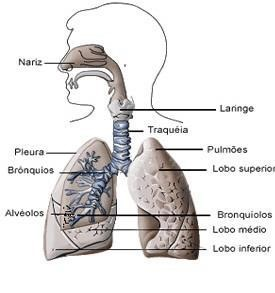
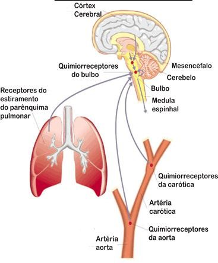

As fossas nasais (ou cavidades nasais) e a boca são os locais de entrada do ar que se dirige ao nosso sistema respiratório.
O ar que entra pelas fossas nasais é filtrado, umedecido e aquecido, antes de ir para a traqueia. Cílios que revestem o epitélio das fossas nasais retêm partículas de sujeira e microorganismos que existem no ar. As partículas aderem ao muco produzido pelas células epiteliais e, posteriormente, são expelidas das fossas nasais.

Em seguida o ar passa pela laringe (local onde se encontram as nossas cordas vocais ou pregas vocais), atravessando a glote que é a entrada da laringe. Logo acima dela há uma estrutura cartilaginosa, a epiglote, que fecha a passagem do alimento para a laringe, não havendo perigo do alimento entrar nas vias respiratórias. A seguir o ar penetra na traqueia, que se bifurca em dois brônquios principais. Cada brônquio ramifica-se inúmeras vezes e origina bronquíolos progressivamente menos calibrosos, até se formarem os bronquíolos terminais. Estes, por sua vez, terminam em bolsinhas, de parede extremamente delgada, os alvéolos pulmonares.
As trocas gasosas se dão entre o ar alveolar e o sangue contido nos capilares. O sangue proveniente dos tecidos é rico em gás carbônico e pobre em oxigênio. O ar alveolar é rico em oxigênio e pobre em gás carbônico. O gás carbônico se difunde do sangue para o ar alveolar, deixando livres as moléculas de hemoglobina existentes nas hemácias. Por sua vez, o oxigênio difunde-se do ar alveolar para o sangue, ocupando os lugares vagos existentes nas moléculas de hemoglobina.
No homem e nos demais mamíferos a ventilação pulmonar depende dos músculos intercostais (situados entre as costelas) e do diafragma. A entrada de ar nos pulmões, a inspiração, se da pela contração da musculatura do diafragma e dos músculos intercostais. O diafragma abaixa e as costelas se elevam, o que aumenta o volume da caixa torácica, forçando o ar a entrar nos pulmões.

A saída de ar dos pulmões, a expiração, se dá pelo relaxamento da musculatura do diafragma e dos músculos intercostais. O diafragma se eleva e as costelas abaixam, o que diminui o volume da caixa torácica, forçando o ar a sair dos pulmões.
A cada movimento respiratório, um homem jovem inala e exala, em média, cerca de meio litro de ar; esse valor é um pouco menor para a média das mulheres. O volume máximo de ar que pode ser inalado e exalado em uma respiração forçada é denominado capacidade vital, algo em torno de 4 a 5 L, para um homem jovem. Os pulmões, no entanto, contêm mais ar que a sua capacidade vital, pois é impossível expirar a totalidade de ar contido nos alvéolos. Mesmo quando se força ao máximo a expiração, ainda resta cerca de 1,5 L de ar nos pulmões; esse é o ar residual. Mais de 10 mil litros de ar entram e saem de nossos pulmões, a cada 24 horas. Nesse período os pulmões absorvem entre 450 e 500 L de gás oxigênio e expelem entre 400 e 450 L de gás carbônico.
O que aconteceria a uma pessoa se ela tentasse segurar a respiração voluntariamente por algum tempo? Imediatamente, um comando localizado no bulbo – ou medula oblonga (um órgão componente do nosso sistema nervoso central) enviaria a mensagem aos músculos respiratórios, fazendo com que se contraíssem. Esse centro de comando, conhecido como centro respiratório bulbar, é altamente sensível ao aumento de CO2 no sangue e à diminuição do pH sanguíneo decorrente do acúmulo desse gás.
Lembre-se que o CO2 em solução aquosa forma H2CO3, ácido carbônico, que se ioniza em H+ e H2CO3-. O aumento da acidez e o próprio CO2 em solução física no plasma estimulam os neurônios do centro respiratório. Consequentemente, impulsos nervosos seguem pelo nervo que inerva o diafragma e a musculatura intercostal, promovendo a sua contração e a realização involuntária dos movimentos respiratórios. De início, ocorre uma hiperventilação, ou seja, o ritmo dos movimentos respiratórios aumenta na tentativa de expulsar o excesso de gás carbônico. Lentamente, porém, a situação se normaliza e a respiração volta aos níveis habituais.